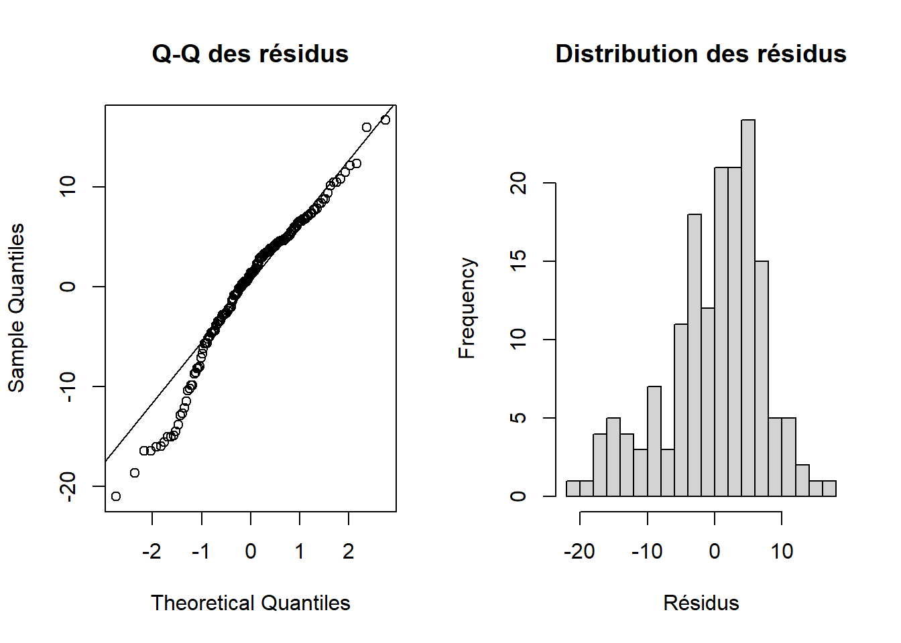

Identifier quels facteurs (groupe, variété, période) expliquent la variable dépendante taille, en testant les effets principaux et les interactions (un facteur ; deux facteurs avec ou sans interaction), puis en réalisant les comparaisons post-hoc en cas d’effets significatifs.
5 Objectif
Ce chapitre vise à déterminer les facteurs qui peuvent expliquer la variable dépendante (la hauteur des plantes). On distingue classiquement :
Un facteur : on teste l’effet d’un seul facteur (ex. fertilisant, ou variété, ou période) sur la variable dépendante.
Deux facteurs avec ou sans interaction : on teste les effets de deux facteurs (ex. fertilisant et variété, ou fertilisant et période) et leur interaction. Si l’interaction est significative, l’effet d’un facteur dépend du niveau de l’autre ; sinon, les effets principaux suffisent à interpréter les résultats.
Dans notre étude, la variable dépendante est la hauteur ; les facteurs sont le fertilisant (terreau : Ma, Ca, An), la variété (Var1, Var2) et la période (T1–T4). Les plantes sont toutes différentes (individus uniques), avec des mesures répétées dans le temps. On utilise un modèle linéaire (LM) à effets fixes : fertilisant (principal), variété (contrôle) et période ; chaque ligne des données correspond à une observation de hauteur.
6 Données et modèle linéaire (LM)
Les mêmes données qu’au chapitre 2 sont chargées puis analysées avec un modèle hauteur ~ fertilisant × variété + Error(id / période) : effets fixes fertilisant (3 terreaux), variété (2 variétés), période (T1–T4) et interactions ; effet aléatoire intercept par plante (id). Tous les sujets sont inclus.
6.1 Explication de ce qui est fait dans le modèle
Voici, dans l’ordre, ce que fait le chapitre en utilisant uniquement une ANOVA à mesures répétées avec afex::aov_car.
1. Import et préparation des données
Lecture du fichier Excel donnees/donnees.xlsx.
Variables utilisées : groupe (terreau Ma, Ca, An), variete (Var1, Var2), periode (T1–T4), taille (variable à expliquer).
Conversion de taille en numérique en gérant les virgules décimales.
Mise en facteur de groupe, variete, periode avec les bons niveaux.
Création d’un identifiant techniqueid (une étiquette par ligne) pour définir la structure des mesures répétées dans le modèle (mais sans entrer comme facteur explicatif).
2. Modèle ANOVA à mesures répétées (afex::aov_car)
Le modèle est ajusté avec :
Variable dépendante (dv) : taille.
Facteurs inter-sujets (between) : groupe et variete (chaque observation appartient à une seule combinaison groupe × variété).
Facteur intra-sujet (within) : periode (mêmes plantes suivies à T1, T2, T3, T4).
Formule utilisée :
[ + ]
afex::aov_car calcule une ANOVA de type III avec, pour chaque effet (groupe, variete, groupe×variete, etc.) :
les sommes de carrés,
le F de Fisher,
la p-value,
la taille d’effet ((^2) partiel, pes).
3. Sphéricité et corrections (Mauchly, GG, HF)
summary() du modèle fournit :
le test de Mauchly de sphéricité pour les effets impliquant periode,
les corrections de Greenhouse–Geisser (GG) et Huynh–Feldt (HF) si la sphéricité n’est pas respectée.
L’interprétation des effets de periode et des interactions avec periode se base sur ces p-values corrigées.
4. Vérifications des conditions de validité
Normalité des résidus : graphiques Q–Q et histogramme des résidus de l’ANOVA à mesures répétées.
Homogénéité des variances (Levene) : test de Levene sur la taille moyenne par combinaison groupe × variété × id, afin de vérifier l’égalité des variances entre conditions.
5. Comparaisons post-hoc (emmeans)
Moyennes marginales (groupe × variété) : estimation des moyennes de taille pour chaque combinaison groupe–variété, avec erreurs standard et intervalles de confiance à 95 %.
Comparaisons deux à deux (Tukey) :
Comparaisons entre toutes les combinaisons groupe × variété (effets globaux).
Comparaisons par période : mêmes contrastes, mais séparément pour T1, T2, T3, T4, pour repérer les périodes où les différences sont significatives.
Résumé : cette ANOVA à mesures répétées teste si le terreau (groupe), la variété (variete) et la période (periode) – ainsi que leurs interactions – expliquent la taille, en respectant la structure de mesures répétées. Les diagnostics (normalité, Levene, sphéricité) justifient l’usage des tests F et des post-hoc de Tukey, qui permettent ensuite de conclure sur les conditions (terreau × variété, par période) donnant les tailles les plus élevées.
# --- Import : plan = mesures répétées T1–T4 pour Var1 et Var2, dans chaque fertilisant ---if (!requireNamespace("readxl", quietly =TRUE)) install.packages("readxl", repos ="https://cloud.r-project.org", quiet =TRUE)library(readxl)d <-read_excel("donnees/donnees.xlsx")d$hauteur <-as.numeric(gsub(",", ".", as.character(d$hauteur)))d <- d %>%mutate(periode =factor(as.character(periode), levels =c("T1", "T2", "T3", "T4")),fertilisant =factor(fertilisant, levels =c("Ma", "Ca", "An")),variete =factor(variete) ) %>%# Création d'identifiants "sujets" artificiels par (fertilisant, variete, rang)# pour simuler des mesures répétées comme dans l'exemple DABIREgroup_by(fertilisant, variete, periode) %>%arrange(fertilisant, variete, periode, .by_group =TRUE) %>%mutate(rang =row_number()) %>%ungroup() %>%mutate(id =interaction(fertilisant, variete, rang, drop =TRUE),id =factor(id) )
6.2 Description du modèle utilisé
Le modèle utilisé est une ANOVA à mesures répétées implémentée avec afex::aov_car. Chaque ligne du tableau correspond à une observation de hauteur pour une combinaison (fertilisant, variété, période).
Élément
Description
Variable dépendante
hauteur (hauteur des plantes, quantitative)
Facteurs inter-sujets
fertilisant (3 terreaux : Ma, Ca, An), variete (2 variétés)
Facteur intra-sujet
periode (T1–T4, mesures répétées)
Identifiant (id)
Étiquette technique construite par combinaison (fertilisant, variete, rang) pour regrouper artificiellement les mesures répétées dans Error(id / periode)
Type III ; corrections Greenhouse–Geisser / Huynh–Feldt pour les termes impliquant periode ; η² partiel (pes) comme taille d’effet
Code
# --- ANOVA à mesures répétées avec afex::aov_car -------------------------# On fixe le type de sommes de carrés à III (classique en présence d'interactions)afex::afex_options(type =3)# Ajustement du modèle :# - hauteur : variable dépendante# - fertilisant * variete : effets fixes inter-sujets et leur interaction# - Error(id / periode) : structure de mesures répétées (effet de periode imbriqué dans id)# - na.rm = TRUE : les observations manquantes (périodes non observées pour certains individus)# sont retirées de l'analyse, comme suggéré par le message d'erreur d'afex.anova_rm <- afex::aov_car( hauteur ~ fertilisant * variete +Error(id / periode),data = d,na.rm =TRUE)# Tableau ANOVA "propre" (nice) :# - fournit F, p-value, et η² partiel (pes) pour chaque effettab_rm <-nice(anova_rm, es ="pes")knitr::kable( tab_rm,caption ="ANOVA à mesures répétées (afex::aov_car) : effets de fertilisant, variété, période et interactions, avec η² partiel.")
ANOVA à mesures répétées (afex::aov_car) : effets de fertilisant, variété, période et interactions, avec η² partiel.
Effect
df
MSE
F
pes
p.value
fertilisant
2, 35
50.78
4.53 *
.205
.018
variete
1, 35
50.78
10.51 **
.231
.003
fertilisant:variete
2, 35
50.78
0.09
.005
.916
periode
2.59, 90.49
73.59
5.29 **
.131
.003
fertilisant:periode
5.17, 90.49
73.59
0.49
.027
.792
variete:periode
2.59, 90.49
73.59
4.77 **
.120
.006
fertilisant:variete:periode
5.17, 90.49
73.59
1.05
.056
.396
Code
# Résumé complet du modèle :# - inclut le test de Mauchly (sphéricité)# - et les corrections GG / HF si nécessairesummary(anova_rm)
Univariate Type III Repeated-Measures ANOVA Assuming Sphericity
Sum Sq num Df Error SS den Df F value Pr(>F)
(Intercept) 168766 1 1777.2 35 3323.6960 < 2.2e-16
fertilisant 460 2 1777.2 35 4.5250 0.017870
variete 534 1 1777.2 35 10.5127 0.002605
fertilisant:variete 9 2 1777.2 35 0.0878 0.916122
periode 1006 3 6659.0 105 5.2876 0.001956
fertilisant:periode 185 6 6659.0 105 0.4853 0.818020
variete:periode 908 3 6659.0 105 4.7733 0.003694
fertilisant:variete:periode 399 6 6659.0 105 1.0478 0.398892
(Intercept) ***
fertilisant *
variete **
fertilisant:variete
periode **
fertilisant:periode
variete:periode **
fertilisant:variete:periode
---
Signif. codes: 0 '***' 0.001 '**' 0.01 '*' 0.05 '.' 0.1 ' ' 1
Mauchly Tests for Sphericity
Test statistic p-value
periode 0.80217 0.19052
fertilisant:periode 0.80217 0.19052
variete:periode 0.80217 0.19052
fertilisant:variete:periode 0.80217 0.19052
Greenhouse-Geisser and Huynh-Feldt Corrections
for Departure from Sphericity
GG eps Pr(>F[GG])
periode 0.86184 0.003361 **
fertilisant:periode 0.86184 0.792291
variete:periode 0.86184 0.005876 **
fertilisant:variete:periode 0.86184 0.395740
---
Signif. codes: 0 '***' 0.001 '**' 0.01 '*' 0.05 '.' 0.1 ' ' 1
HF eps Pr(>F[HF])
periode 0.9365994 0.002506562
fertilisant:periode 0.9365994 0.806780783
variete:periode 0.9365994 0.004568788
fertilisant:variete:periode 0.9365994 0.397572844
En résumé, la hauteur dépend significativement du fertilisant et de la variété, ainsi que de la période de mesure, avec une interaction significative entre variété et période ; les interactions impliquant le fertilisant ne sont pas significatives.
Les tests de Mauchly ne sont pas significatifs, ce qui indique que l’hypothèse de sphéricité est raisonnable ; les corrections de Greenhouse–Geisser et Huynh–Feldt confirment la significativité de l’effet de la période et de l’interaction variété × période, tandis que les termes avec le fertilisant restent non significatifs.
7 Vérification des conditions de validité
7.1 Normalité des résidus
Code
# On extrait les résidus du modèle sous-jacent (lm) contenu dans l'objet afexres <-residuals(anova_rm$lm)# Affichage côte à côte :# - Q-Q plot : vérification de l'alignement des résidus sur la droite théorique# - Histogramme : forme globale (approximation gaussienne attendue)par(mfrow =c(1, 2))qqnorm(res, main ="Q-Q des résidus"); qqline(res)hist(res, breaks =15, main ="Distribution des résidus", xlab ="Résidus")

Graphique Q-Q et histogramme des résidus de l’ANOVA à mesures répétées.
Code
par(mfrow =c(1, 1))# Test formel de normalité (Shapiro-Wilk)shapiro_res <-shapiro.test(res)shapiro_res
Shapiro-Wilk normality test
data: res
W = 0.96094, p-value = 0.0001458
Les graphes de résidus indiquent une distribution globalement symétrique et proche d’une droite normale, mais le test de Shapiro–Wilk est significatif (p-value très petite), ce qui met en évidence une déviation statistique de la normalité ; compte tenu de la taille d’échantillon et de l’homogénéité des variances, l’ANOVA reste toutefois utilisable avec prudence.
7.2 Homogénéité des variances (Levene)
Le test de Levene est réalisé sur la hauteur moyenne par combinaison (id, fertilisant, variete), ce qui revient à comparer les variances entre conditions expérimentales (fertilisant × variété), indépendamment de la période.
Code
# Agrégation : moyenne de hauteur par id, fertilisant, variétéd_mean <- d %>%group_by(id, fertilisant, variete) %>%summarise(hauteur_moy =mean(hauteur, na.rm =TRUE), .groups ="drop")# Test de Levene sur les variances de hauteur moyenne entre combinaisons fertilisant × variétélev <- car::leveneTest(hauteur_moy ~ fertilisant * variete, data = d_mean)# Mise en forme d'un tableau lisiblelev_df <-as.data.frame(lev)lev_df <-cbind(Source =rownames(lev_df), lev_df)rownames(lev_df) <-NULLnames(lev_df) <-c("Source", "Ddl", "F", "p-value")lev_df[["p-value"]] <-ifelse(is.na(lev_df[["p-value"]]), "—", format.pval(lev_df[["p-value"]], digits =3))lev_df[["F"]] <-ifelse(is.na(lev_df[["F"]]), "—", format(round(lev_df[["F"]], 4), nsmall =4))lev_df[is.na(lev_df)] <-"—"knitr::kable( lev_df,align =c("l", "r", "r", "r"),caption ="Test de Levene sur la hauteur moyenne (homogénéité des variances entre groupes de fertilisant et de variété).")
Test de Levene sur la hauteur moyenne (homogénéité des variances entre groupes de fertilisant et de variété).
Source
Ddl
F
p-value
group
5
0.8640
0.509
75
—
—
Le test de Levene n’étant pas significatif, on peut considérer que les variances de hauteur sont similaires entre les combinaisons de fertilisant et de variété.
8 Comparaisons post-hoc
9 Comparaisons post-hoc
Lorsque des effets ou interactions sont significatifs, les comparaisons deux à deux (Tukey) permettent d’identifier les combinaisons groupe × variété et les périodes dont les moyennes diffèrent significativement.
9.1 Moyennes marginales (fertilisant × variété)
Code
# Moyennes marginales (effet global de fertilisant × variété, toutes périodes confondues)emm_gv <-emmeans(anova_rm, ~ fertilisant * variete)# Extraction sous forme de data.frame et arrondi pour la présentationemm_gv_df <-summary(emm_gv) %>%as.data.frame()emm_gv_df <- emm_gv_df %>%mutate(emmean =round(emmean, 2),SE =round(SE, 3),lower.CL =round(lower.CL, 2),upper.CL =round(upper.CL, 2) )names(emm_gv_df) <-c("Fertilisant", "Variété", "Moyenne", "ESM", "Ddl", "IC inf.", "IC sup.")knitr::kable( emm_gv_df[, c("Fertilisant", "Variété", "Moyenne", "ESM", "IC inf.", "IC sup.")],align =c("l", "l", "r", "r", "r", "r"),caption ="Moyennes marginales (et IC 95 %) pour fertilisant × variété (toutes périodes confondues).")
Moyennes marginales (et IC 95 %) pour fertilisant × variété (toutes périodes confondues).
Fertilisant
Variété
Moyenne
ESM
IC inf.
IC sup.
Ma
Var1
31.58
1.029
29.49
33.67
Ca
Var1
34.61
1.347
31.88
37.34
An
Var1
30.04
1.593
26.81
33.27
Ma
Var2
36.03
1.781
32.41
39.64
Ca
Var2
37.86
1.455
34.91
40.81
An
Var2
33.82
1.347
31.08
36.55
Ces moyennes montrent que, en moyenne sur toutes les périodes, la variété 2 produit des plantes plus hautes que la variété 1 pour un même fertilisant, avec des valeurs maximales observées pour les combinaisons Ca–Var2 et Ma–Var2.
9.2 Comparaisons deux à deux : fertilisant × variété (Tukey)
Comparaisons post-hoc Tukey : fertilisant × variété (toutes périodes confondues). * p < 0,05 ; ** p < 0,01 ; *** p < 0,001.
Contraste
Différence
ESM
Ddl
t
p-value
Signif.
Ma Var1 - Ca Var1
-3.029
1.694
35
-1.79
0.4863
Ma Var1 - An Var1
1.541
1.896
35
0.81
0.9633
Ma Var1 - Ma Var2
-4.444
2.057
35
-2.16
0.2816
Ma Var1 - Ca Var2
-6.277
1.781
35
-3.52
0.0141
*
Ma Var1 - An Var2
-2.237
1.694
35
-1.32
0.7722
Ca Var1 - An Var1
4.571
2.086
35
2.19
0.2675
Ca Var1 - Ma Var2
-1.414
2.233
35
-0.63
0.9877
Ca Var1 - Ca Var2
-3.248
1.982
35
-1.64
0.5798
Ca Var1 - An Var2
0.793
1.904
35
0.42
0.9983
An Var1 - Ma Var2
-5.985
2.390
35
-2.50
0.1505
An Var1 - Ca Var2
-7.818
2.157
35
-3.62
0.0109
*
An Var1 - An Var2
-3.778
2.086
35
-1.81
0.4722
Ma Var2 - Ca Var2
-1.833
2.300
35
-0.80
0.9661
Ma Var2 - An Var2
2.207
2.233
35
0.99
0.9186
Ca Var2 - An Var2
4.040
1.982
35
2.04
0.3422
Après correction de Tukey, seules les combinaisons Ca–Var2 vs Ma–Var1 et Ca–Var2 vs An–Var1 présentent des différences significatives de hauteur, ce qui confirme un avantage marqué de Ca–Var2 par rapport à ces deux couples.
Comparaisons post-hoc Tukey par période. * p < 0,05 ; ** p < 0,01 ; *** p < 0,001.
Période
Contraste
Différence
ESM
t
p-value
Signif.
Ma Var1 - Ca Var1
T1
-7.761
35
-2.00
0.3646
Ma Var1 - An Var1
T1
2.705
35
0.62
0.9886
*
Ma Var1 - Ma Var2
T1
-15.525
35
-3.29
0.0256
Ma Var1 - Ca Var2
T1
-12.308
35
-3.01
0.0501
*
Ma Var1 - An Var2
T1
-14.004
35
-3.60
0.0115
Ca Var1 - An Var1
T1
10.466
35
2.19
0.2693
Ca Var1 - Ma Var2
T1
-7.764
35
-1.52
0.6568
Ca Var1 - Ca Var2
T1
-4.548
35
-1.00
0.9148
Ca Var1 - An Var2
T1
-6.243
35
-1.43
0.7095
*
An Var1 - Ma Var2
T1
-18.230
35
-3.33
0.0234
*
An Var1 - Ca Var2
T1
-15.013
35
-3.03
0.0477
*
An Var1 - An Var2
T1
-16.709
35
-3.49
0.0153
Ma Var2 - Ca Var2
T1
3.217
35
0.61
0.9896
Ma Var2 - An Var2
T1
1.521
35
0.30
0.9997
Ca Var2 - An Var2
T1
-1.695
35
-0.37
0.9990
Ma Var1 - Ca Var1
T2
-0.293
35
-0.08
1.0000
Ma Var1 - An Var1
T2
0.250
35
0.06
1.0000
Ma Var1 - Ma Var2
T2
2.550
35
0.60
0.9907
Ma Var1 - Ca Var2
T2
-1.833
35
-0.49
0.9961
Ma Var1 - An Var2
T2
0.907
35
0.26
0.9998
Ca Var1 - An Var1
T2
0.543
35
0.12
1.0000
Ca Var1 - Ma Var2
T2
2.843
35
0.61
0.9895
Ca Var1 - Ca Var2
T2
-1.540
35
-0.37
0.9990
Ca Var1 - An Var2
T2
1.200
35
0.30
0.9996
An Var1 - Ma Var2
T2
2.300
35
0.46
0.9971
An Var1 - Ca Var2
T2
-2.083
35
-0.46
0.9971
An Var1 - An Var2
T2
0.657
35
0.15
1.0000
Ma Var2 - Ca Var2
T2
-4.383
35
-0.92
0.9399
Ma Var2 - An Var2
T2
-1.643
35
-0.35
0.9992
Ca Var2 - An Var2
T2
2.740
35
0.66
0.9847
Ma Var1 - Ca Var1
T3
-6.010
35
-1.75
0.5072
Ma Var1 - An Var1
T3
1.853
35
0.48
0.9965
Ma Var1 - Ma Var2
T3
-2.092
35
-0.50
0.9957
Ma Var1 - Ca Var2
T3
-6.633
35
-1.84
0.4536
Ma Var1 - An Var2
T3
1.162
35
0.34
0.9994
Ca Var1 - An Var1
T3
7.863
35
1.86
0.4402
Ca Var1 - Ma Var2
T3
3.918
35
0.87
0.9517
Ca Var1 - Ca Var2
T3
-0.624
35
-0.16
1.0000
Ca Var1 - An Var2
T3
7.171
35
1.86
0.4412
An Var1 - Ma Var2
T3
-3.945
35
-0.82
0.9626
An Var1 - Ca Var2
T3
-8.487
35
-1.95
0.3930
An Var1 - An Var2
T3
-0.691
35
-0.16
1.0000
Ma Var2 - Ca Var2
T3
-4.542
35
-0.98
0.9223
Ma Var2 - An Var2
T3
3.254
35
0.72
0.9781
Ca Var2 - An Var2
T3
7.795
35
1.94
0.3933
Ma Var1 - Ca Var1
T4
1.945
35
0.50
0.9959
Ma Var1 - An Var1
T4
1.357
35
0.31
0.9996
Ma Var1 - Ma Var2
T4
-2.708
35
-0.57
0.9923
Ma Var1 - Ca Var2
T4
-4.333
35
-1.06
0.8950
Ma Var1 - An Var2
T4
2.988
35
0.77
0.9715
Ca Var1 - An Var1
T4
-0.589
35
-0.12
1.0000
Ca Var1 - Ma Var2
T4
-4.654
35
-0.90
0.9426
Ca Var1 - Ca Var2
T4
-6.279
35
-1.38
0.7409
Ca Var1 - An Var2
T4
1.043
35
0.24
0.9999
An Var1 - Ma Var2
T4
-4.065
35
-0.74
0.9756
An Var1 - Ca Var2
T4
-5.690
35
-1.15
0.8589
An Var1 - An Var2
T4
1.631
35
0.34
0.9993
Ma Var2 - Ca Var2
T4
-1.625
35
-0.31
0.9996
Ma Var2 - An Var2
T4
5.696
35
1.11
0.8749
Ca Var2 - An Var2
T4
7.321
35
1.60
0.6015
À la période T1, plusieurs contrastes sont significatifs et indiquent un net avantage de la variété 2 pour certains fertilisants, alors qu’aux périodes T2, T3 et T4 aucune comparaison fertilisant × variété n’est significative, ce qui suggère un rapprochement des hauteurs entre combinaisons au fil du temps.
10 Modèles ANOVA à mesures répétées (structure type DABIRE)
Dans cette section, on implémente exactement le même type de modèles que dans le rapport de DABIRE (ANOVA par période, puis ANOVA à mesures répétées avec car::Anova), en utilisant directement les variables fertilisant, variete, periode et hauteur de la base.
# Import des mêmes données que précédemmentd2 <-read_excel("donnees/donnees.xlsx")# Conversion des virgules décimales en points et mise en forme des facteursd2$hauteur <-as.numeric(gsub(",", ".", as.character(d2$hauteur)))d2 <- d2 %>%mutate(fertilisant =factor(fertilisant), # Ma, Ca, Anvariete =factor(variete), # Var1, Var2periode =factor(periode, levels =c("T1","T2","T3","T4")) )
10.1 Modélisation : ANOVA par période + modèle à mesures répétées
Code
# Création d'IDs artificiels par (fertilisant, variete, periode)d2_id <- d2 %>%group_by(fertilisant, variete, periode) %>%arrange(No, .by_group =TRUE) %>%mutate(rang =row_number()) %>%ungroup() %>%mutate(id =interaction(fertilisant, variete, rang, drop =TRUE))# Passage au format large : une ligne = un "sujet", colonnes t1..t4base <- d2_id %>%mutate(periode_mesure = dplyr::recode(as.character(periode),"T1"="t1","T2"="t2","T3"="t3","T4"="t4" ) ) %>%select(id, fertilisant, variete, periode_mesure, hauteur) %>% tidyr::pivot_wider(names_from = periode_mesure,values_from = hauteur ) %>%arrange(id)# Matrice de réponses hauteur (t1..t4) et facteursbase$hauteur <-as.matrix(base[, c("t1","t2","t3","t4")])base$fertilisant <-factor(base$fertilisant)base$variete <-factor(base$variete)attach(base)
Response t1 :
Df Sum Sq Mean Sq F value Pr(>F)
fertilisant 2 258.3 129.15 1.2451 0.2994
Residuals 38 3941.9 103.73
Response t2 :
Df Sum Sq Mean Sq F value Pr(>F)
fertilisant 2 23.87 11.933 0.232 0.7941
Residuals 38 1954.41 51.432
Response t3 :
Df Sum Sq Mean Sq F value Pr(>F)
fertilisant 2 415.77 207.886 4.3114 0.02054 *
Residuals 38 1832.28 48.218
---
Signif. codes: 0 '***' 0.001 '**' 0.01 '*' 0.05 '.' 0.1 ' ' 1
Response t4 :
Df Sum Sq Mean Sq F value Pr(>F)
fertilisant 2 82.58 41.291 0.6244 0.541
Residuals 38 2513.09 66.134
40 observations effacées parce que manquantes
Code
LM_fert <-summary(mod.hauteur.fertilisant)LM_fert
Response t1 :
Call:
lm(formula = t1 ~ fertilisant)
Residuals:
Min 1Q Median 3Q Max
-25.7667 -5.7667 -0.1063 6.2333 19.1154
Coefficients:
Estimate Std. Error t value Pr(>|t|)
(Intercept) 34.267 2.940 11.655 4.1e-14 ***
fertilisantCa 2.818 4.077 0.691 0.494
fertilisantMa -3.160 3.889 -0.813 0.422
---
Signif. codes: 0 '***' 0.001 '**' 0.01 '*' 0.05 '.' 0.1 ' ' 1
Residual standard error: 10.18 on 38 degrees of freedom
(40 observations effacées parce que manquantes)
Multiple R-squared: 0.0615, Adjusted R-squared: 0.0121
F-statistic: 1.245 on 2 and 38 DF, p-value: 0.2994
Response t2 :
Call:
lm(formula = t2 ~ fertilisant)
Residuals:
Min 1Q Median 3Q Max
-21.317 -2.654 1.688 4.483 9.988
Coefficients:
Estimate Std. Error t value Pr(>|t|)
(Intercept) 35.016667 2.070261 16.914 <2e-16 ***
fertilisantCa 1.637179 2.870935 0.570 0.572
fertilisantMa -0.004167 2.738697 -0.002 0.999
---
Signif. codes: 0 '***' 0.001 '**' 0.01 '*' 0.05 '.' 0.1 ' ' 1
Residual standard error: 7.172 on 38 degrees of freedom
(40 observations effacées parce que manquantes)
Multiple R-squared: 0.01206, Adjusted R-squared: -0.03993
F-statistic: 0.232 on 2 and 38 DF, p-value: 0.7941
Response t3 :
Call:
lm(formula = t3 ~ fertilisant)
Residuals:
Min 1Q Median 3Q Max
-16.5562 -3.3563 0.9437 4.9167 12.4167
Coefficients:
Estimate Std. Error t value Pr(>|t|)
(Intercept) 26.083 2.005 13.012 1.41e-15 ***
fertilisantCa 7.747 2.780 2.787 0.00826 **
fertilisantMa 1.973 2.652 0.744 0.46145
---
Signif. codes: 0 '***' 0.001 '**' 0.01 '*' 0.05 '.' 0.1 ' ' 1
Residual standard error: 6.944 on 38 degrees of freedom
(40 observations effacées parce que manquantes)
Multiple R-squared: 0.1849, Adjusted R-squared: 0.1421
F-statistic: 4.311 on 2 and 38 DF, p-value: 0.02054
Response t4 :
Call:
lm(formula = t4 ~ fertilisant)
Residuals:
Min 1Q Median 3Q Max
-19.369 -2.108 1.631 4.131 12.392
Coefficients:
Estimate Std. Error t value Pr(>|t|)
(Intercept) 33.608 2.348 14.316 <2e-16 ***
fertilisantCa 3.261 3.256 1.002 0.323
fertilisantMa 2.985 3.106 0.961 0.342
---
Signif. codes: 0 '***' 0.001 '**' 0.01 '*' 0.05 '.' 0.1 ' ' 1
Residual standard error: 8.132 on 38 degrees of freedom
(40 observations effacées parce que manquantes)
Multiple R-squared: 0.03182, Adjusted R-squared: -0.01914
F-statistic: 0.6244 on 2 and 38 DF, p-value: 0.541
Ces analyses univariées montrent que l’effet du fertilisant sur la hauteur n’est significatif qu’à la période T3, où le fertilisant Ca donne des plantes plus hautes que le fertilisant de référence, alors qu’aux périodes T1, T2 et T4 les différences entre fertilisants ne sont pas statistiquement détectables.
Response t1 :
Df Sum Sq Mean Sq F value Pr(>F)
variete 1 1448.1 1448.12 20.522 5.447e-05 ***
Residuals 39 2752.0 70.57
---
Signif. codes: 0 '***' 0.001 '**' 0.01 '*' 0.05 '.' 0.1 ' ' 1
Response t2 :
Df Sum Sq Mean Sq F value Pr(>F)
variete 1 1.29 1.288 0.0254 0.8742
Residuals 39 1976.98 50.692
Response t3 :
Df Sum Sq Mean Sq F value Pr(>F)
variete 1 9.72 9.718 0.1693 0.683
Residuals 39 2238.34 57.393
Response t4 :
Df Sum Sq Mean Sq F value Pr(>F)
variete 1 31.75 31.752 0.483 0.4912
Residuals 39 2563.92 65.741
40 observations effacées parce que manquantes
Code
LM_var <-summary(mod.hauteur.variete)LM_var
Response t1 :
Call:
lm(formula = t1 ~ variete)
Residuals:
Min 1Q Median 3Q Max
-20.425 -5.488 2.012 5.012 15.212
Coefficients:
Estimate Std. Error t value Pr(>|t|)
(Intercept) 28.925 1.715 16.87 < 2e-16 ***
varieteVar2 12.063 2.663 4.53 5.45e-05 ***
---
Signif. codes: 0 '***' 0.001 '**' 0.01 '*' 0.05 '.' 0.1 ' ' 1
Residual standard error: 8.4 on 39 degrees of freedom
(40 observations effacées parce que manquantes)
Multiple R-squared: 0.3448, Adjusted R-squared: 0.328
F-statistic: 20.52 on 1 and 39 DF, p-value: 5.447e-05
Response t2 :
Call:
lm(formula = t2 ~ variete)
Residuals:
Min 1Q Median 3Q Max
-21.623 -2.324 1.677 4.317 9.877
Coefficients:
Estimate Std. Error t value Pr(>|t|)
(Intercept) 35.6833 1.4533 24.553 <2e-16 ***
varieteVar2 -0.3598 2.2570 -0.159 0.874
---
Signif. codes: 0 '***' 0.001 '**' 0.01 '*' 0.05 '.' 0.1 ' ' 1
Residual standard error: 7.12 on 39 degrees of freedom
(40 observations effacées parce que manquantes)
Multiple R-squared: 0.0006512, Adjusted R-squared: -0.02497
F-statistic: 0.02541 on 1 and 39 DF, p-value: 0.8742
Response t3 :
Call:
lm(formula = t3 ~ variete)
Residuals:
Min 1Q Median 3Q Max
-17.40 -3.40 1.60 4.50 12.11
Coefficients:
Estimate Std. Error t value Pr(>|t|)
(Intercept) 28.9000 1.5464 18.688 <2e-16 ***
varieteVar2 0.9882 2.4016 0.411 0.683
---
Signif. codes: 0 '***' 0.001 '**' 0.01 '*' 0.05 '.' 0.1 ' ' 1
Residual standard error: 7.576 on 39 degrees of freedom
(40 observations effacées parce que manquantes)
Multiple R-squared: 0.004323, Adjusted R-squared: -0.02121
F-statistic: 0.1693 on 1 and 39 DF, p-value: 0.683
Response t4 :
Call:
lm(formula = t4 ~ variete)
Residuals:
Min 1Q Median 3Q Max
-17.567 -2.567 1.933 5.147 11.233
Coefficients:
Estimate Std. Error t value Pr(>|t|)
(Intercept) 35.067 1.655 21.188 <2e-16 ***
varieteVar2 1.786 2.570 0.695 0.491
---
Signif. codes: 0 '***' 0.001 '**' 0.01 '*' 0.05 '.' 0.1 ' ' 1
Residual standard error: 8.108 on 39 degrees of freedom
(40 observations effacées parce que manquantes)
Multiple R-squared: 0.01223, Adjusted R-squared: -0.01309
F-statistic: 0.483 on 1 and 39 DF, p-value: 0.4912
On observe un effet très net de la variété à T1, où la variété 2 produit des plantes sensiblement plus hautes que la variété 1, alors qu’aux périodes T2, T3 et T4 les hauteurs des deux variétés deviennent statistiquement similaires.
10.1.3 3. Effet d’interaction variété × fertilisant à chaque période
Response t1 :
Df Sum Sq Mean Sq F value Pr(>F)
variete 1 1448.12 1448.12 21.6812 4.51e-05 ***
fertilisant 2 132.98 66.49 0.9955 0.3798
variete:fertilisant 2 281.37 140.68 2.1063 0.1368
Residuals 35 2337.70 66.79
---
Signif. codes: 0 '***' 0.001 '**' 0.01 '*' 0.05 '.' 0.1 ' ' 1
Response t2 :
Df Sum Sq Mean Sq F value Pr(>F)
variete 1 1.29 1.288 0.0234 0.8793
fertilisant 2 24.88 12.440 0.2261 0.7988
variete:fertilisant 2 26.13 13.065 0.2374 0.7899
Residuals 35 1925.97 55.028
Response t3 :
Df Sum Sq Mean Sq F value Pr(>F)
variete 1 9.72 9.718 0.1873 0.66787
fertilisant 2 417.67 208.834 4.0238 0.02674 *
variete:fertilisant 2 4.16 2.082 0.0401 0.96073
Residuals 35 1816.51 51.900
---
Signif. codes: 0 '***' 0.001 '**' 0.01 '*' 0.05 '.' 0.1 ' ' 1
Response t4 :
Df Sum Sq Mean Sq F value Pr(>F)
variete 1 31.75 31.752 0.4717 0.4967
fertilisant 2 111.98 55.991 0.8318 0.4437
variete:fertilisant 2 95.97 47.987 0.7129 0.4972
Residuals 35 2355.96 67.313
40 observations effacées parce que manquantes
L’interaction variété × fertilisant n’est significative à aucune période, ce qui suggère que, à instant donné, l’effet de la variété est globalement parallèle d’un fertilisant à l’autre.
10.1.4 4. Modèle global à mesures répétées avec car::Anova
Type III Repeated Measures MANOVA Tests:
------------------------------------------
Term: (Intercept)
Response transformation matrix:
(Intercept)
t1 1
t2 1
t3 1
t4 1
Sum of squares and products for the hypothesis:
(Intercept)
(Intercept) 72192.13
Multivariate Tests: (Intercept)
Df test stat approx F num Df den Df Pr(>F)
Pillai 1 0.910358 355.4402 1 35 < 2.22e-16 ***
Wilks 1 0.089642 355.4402 1 35 < 2.22e-16 ***
Hotelling-Lawley 1 10.155434 355.4402 1 35 < 2.22e-16 ***
Roy 1 10.155434 355.4402 1 35 < 2.22e-16 ***
---
Signif. codes: 0 '***' 0.001 '**' 0.01 '*' 0.05 '.' 0.1 ' ' 1
------------------------------------------
Term: variete
Response transformation matrix:
(Intercept)
t1 1
t2 1
t3 1
t4 1
Sum of squares and products for the hypothesis:
(Intercept)
(Intercept) 666.0362
Multivariate Tests: variete
Df test stat approx F num Df den Df Pr(>F)
Pillai 1 0.0856665 3.27925 1 35 0.078752 .
Wilks 1 0.9143335 3.27925 1 35 0.078752 .
Hotelling-Lawley 1 0.0936929 3.27925 1 35 0.078752 .
Roy 1 0.0936929 3.27925 1 35 0.078752 .
---
Signif. codes: 0 '***' 0.001 '**' 0.01 '*' 0.05 '.' 0.1 ' ' 1
------------------------------------------
Term: fertilisant
Response transformation matrix:
(Intercept)
t1 1
t2 1
t3 1
t4 1
Sum of squares and products for the hypothesis:
(Intercept)
(Intercept) 1096.433
Multivariate Tests: fertilisant
Df test stat approx F num Df den Df Pr(>F)
Pillai 2 0.1336274 2.699162 2 35 0.081252 .
Wilks 2 0.8663726 2.699162 2 35 0.081252 .
Hotelling-Lawley 2 0.1542378 2.699162 2 35 0.081252 .
Roy 2 0.1542378 2.699162 2 35 0.081252 .
---
Signif. codes: 0 '***' 0.001 '**' 0.01 '*' 0.05 '.' 0.1 ' ' 1
------------------------------------------
Term: variete:fertilisant
Response transformation matrix:
(Intercept)
t1 1
t2 1
t3 1
t4 1
Sum of squares and products for the hypothesis:
(Intercept)
(Intercept) 35.67558
Multivariate Tests: variete:fertilisant
Df test stat approx F num Df den Df Pr(>F)
Pillai 2 0.0049935 0.08782492 2 35 0.91612
Wilks 2 0.9950065 0.08782492 2 35 0.91612
Hotelling-Lawley 2 0.0050186 0.08782492 2 35 0.91612
Roy 2 0.0050186 0.08782492 2 35 0.91612
------------------------------------------
Term: TEMPS
Response transformation matrix:
TEMPS1 TEMPS2 TEMPS3
t1 1 0 0
t2 0 1 0
t3 0 0 1
t4 -1 -1 -1
Sum of squares and products for the hypothesis:
TEMPS1 TEMPS2 TEMPS3
TEMPS1 504.008 -42.168 445.776
TEMPS2 -42.168 3.528 -37.296
TEMPS3 445.776 -37.296 394.272
Multivariate Tests: TEMPS
Df test stat approx F num Df den Df Pr(>F)
Pillai 1 0.2300553 3.28674 3 33 0.032752 *
Wilks 1 0.7699447 3.28674 3 33 0.032752 *
Hotelling-Lawley 1 0.2987946 3.28674 3 33 0.032752 *
Roy 1 0.2987946 3.28674 3 33 0.032752 *
---
Signif. codes: 0 '***' 0.001 '**' 0.01 '*' 0.05 '.' 0.1 ' ' 1
------------------------------------------
Term: variete:TEMPS
Response transformation matrix:
TEMPS1 TEMPS2 TEMPS3
t1 1 0 0
t2 0 1 0
t3 0 0 1
t4 -1 -1 -1
Sum of squares and products for the hypothesis:
TEMPS1 TEMPS2 TEMPS3
TEMPS1 981.03717 52.116167 124.253500
TEMPS2 52.11617 2.768595 6.600786
TEMPS3 124.25350 6.600786 15.737357
Multivariate Tests: variete:TEMPS
Df test stat approx F num Df den Df Pr(>F)
Pillai 1 0.2275214 3.239876 3 33 0.034423 *
Wilks 1 0.7724786 3.239876 3 33 0.034423 *
Hotelling-Lawley 1 0.2945342 3.239876 3 33 0.034423 *
Roy 1 0.2945342 3.239876 3 33 0.034423 *
---
Signif. codes: 0 '***' 0.001 '**' 0.01 '*' 0.05 '.' 0.1 ' ' 1
------------------------------------------
Term: fertilisant:TEMPS
Response transformation matrix:
TEMPS1 TEMPS2 TEMPS3
t1 1 0 0
t2 0 1 0
t3 0 0 1
t4 -1 -1 -1
Sum of squares and products for the hypothesis:
TEMPS1 TEMPS2 TEMPS3
TEMPS1 512.46860 90.53914 408.14814
TEMPS2 90.53914 22.46038 74.88305
TEMPS3 408.14814 74.88305 326.25438
Multivariate Tests: fertilisant:TEMPS
Df test stat approx F num Df den Df Pr(>F)
Pillai 2 0.1644683 1.015495 6 68 0.42274
Wilks 2 0.8358609 1.031664 6 66 0.41287
Hotelling-Lawley 2 0.1959775 1.045213 6 64 0.40482
Roy 2 0.1939470 2.198066 3 34 0.10623
------------------------------------------
Term: variete:fertilisant:TEMPS
Response transformation matrix:
TEMPS1 TEMPS2 TEMPS3
t1 1 0 0
t2 0 1 0
t3 0 0 1
t4 -1 -1 -1
Sum of squares and products for the hypothesis:
TEMPS1 TEMPS2 TEMPS3
TEMPS1 668.4031 143.01790 258.1318
TEMPS2 143.0179 71.05914 61.6922
TEMPS3 258.1318 61.69220 100.7198
Multivariate Tests: variete:fertilisant:TEMPS
Df test stat approx F num Df den Df Pr(>F)
Pillai 2 0.1508520 0.9245641 6 68 0.48303
Wilks 2 0.8505399 0.9273876 6 66 0.48129
Hotelling-Lawley 2 0.1740872 0.9284653 6 64 0.48078
Roy 2 0.1641155 1.8599762 3 34 0.15499
Univariate Type III Repeated-Measures ANOVA Assuming Sphericity
Sum Sq num Df Error SS den Df F value Pr(>F)
(Intercept) 18048.0 1 1777.2 35 355.4402 < 2e-16 ***
variete 166.5 1 1777.2 35 3.2792 0.07875 .
fertilisant 274.1 2 1777.2 35 2.6992 0.08125 .
variete:fertilisant 8.9 2 1777.2 35 0.0878 0.91612
TEMPS 493.2 3 6659.0 105 2.5923 0.05660 .
variete:TEMPS 658.2 3 6659.0 105 3.4594 0.01905 *
fertilisant:TEMPS 359.1 6 6659.0 105 0.9437 0.46720
variete:fertilisant:TEMPS 398.7 6 6659.0 105 1.0478 0.39889
---
Signif. codes: 0 '***' 0.001 '**' 0.01 '*' 0.05 '.' 0.1 ' ' 1
Mauchly Tests for Sphericity
Test statistic p-value
TEMPS 0.80217 0.19052
variete:TEMPS 0.80217 0.19052
fertilisant:TEMPS 0.80217 0.19052
variete:fertilisant:TEMPS 0.80217 0.19052
Greenhouse-Geisser and Huynh-Feldt Corrections
for Departure from Sphericity
GG eps Pr(>F[GG])
TEMPS 0.86184 0.06600 .
variete:TEMPS 0.86184 0.02503 *
fertilisant:TEMPS 0.86184 0.45889
variete:fertilisant:TEMPS 0.86184 0.39574
---
Signif. codes: 0 '***' 0.001 '**' 0.01 '*' 0.05 '.' 0.1 ' ' 1
HF eps Pr(>F[HF])
TEMPS 0.9365994 0.06072900
variete:TEMPS 0.9365994 0.02159004
fertilisant:TEMPS 0.9365994 0.46356203
variete:fertilisant:TEMPS 0.9365994 0.39757284
Les tests multivariés confirment un effet global du temps et une interaction significative variété × temps, indiquant que l’écart entre variétés varie au cours des quatre mesures, tandis que les interactions impliquant le fertilisant avec le temps restent non significatives.
11 Conclusion
Cette ANOVA à mesures répétées (implémentée à la fois avec afex::aov_car et avec la structure multivariée de car::Anova) permet de tester si les facteurs terreau (groupe / fertilisant), variété (variete) et période (periode / TEMPS), ainsi que leurs interactions, expliquent la variable dépendante taille. Après vérification des hypothèses (normalité des résidus, homogénéité des variances, sphéricité et corrections associées), l’interprétation des effets significatifs et des comparaisons post-hoc permet d’identifier les combinaisons terreau × variété et les périodes qui conduisent aux plus fortes hauteurs de plantes.
Source Code
---title: "Facteurs explicatifs de la variable dépendante"subtitle: "Modèle linéaire (LM), validité et post-hoc"---::: callout-important## Objectif du chapitreIdentifier **quels facteurs** (groupe, variété, période) **expliquent** la variable dépendante *taille*, en testant les effets principaux et les interactions (un facteur ; deux facteurs avec ou sans interaction), puis en réalisant les comparaisons post-hoc en cas d'effets significatifs.:::# ObjectifCe chapitre vise à **déterminer les facteurs qui peuvent expliquer la variable dépendante** (la hauteur des plantes). On distingue classiquement :- **Un facteur** : on teste l'effet d'un seul facteur (ex. fertilisant, ou variété, ou période) sur la variable dépendante.- **Deux facteurs avec ou sans interaction** : on teste les effets de deux facteurs (ex. fertilisant et variété, ou fertilisant et période) et leur interaction. Si l'interaction est significative, l'effet d'un facteur dépend du niveau de l'autre ; sinon, les effets principaux suffisent à interpréter les résultats.Dans notre étude, la variable dépendante est la **hauteur** ; les facteurs sont le **fertilisant** (terreau : Ma, Ca, An), la **variété** (Var1, Var2) et la **période** (T1–T4). Les plantes sont toutes différentes (individus uniques), avec des mesures répétées dans le temps. On utilise un **modèle linéaire (LM)** à effets fixes : **fertilisant** (principal), **variété** (contrôle) et **période** ; chaque ligne des données correspond à une observation de hauteur.# Données et modèle linéaire (LM)Les mêmes données qu’au chapitre 2 sont chargées puis analysées avec un modèle **hauteur \~ fertilisant × variété + Error(id / période)** : effets fixes *fertilisant* (3 terreaux), *variété* (2 variétés), *période* (T1–T4) et interactions ; effet aléatoire intercept par *plante* (id). Tous les sujets sont inclus.## Explication de ce qui est fait dans le modèleVoici, dans l'ordre, ce que fait le chapitre en utilisant **uniquement une ANOVA à mesures répétées avec `afex::aov_car`**.**1. Import et préparation des données**- Lecture du fichier Excel `donnees/donnees.xlsx`.- Variables utilisées : **groupe** (terreau Ma, Ca, An), **variete** (Var1, Var2), **periode** (T1–T4), **taille** (variable à expliquer).- Conversion de `taille` en numérique en gérant les **virgules décimales**.- Mise en facteur de `groupe`, `variete`, `periode` avec les bons niveaux.- Création d’un identifiant **technique** `id` (une étiquette par ligne) pour définir la structure des **mesures répétées** dans le modèle (mais sans entrer comme facteur explicatif).**2. Modèle ANOVA à mesures répétées (afex::aov_car)**- Le modèle est ajusté avec : - **Variable dépendante (dv)** : `taille`. - **Facteurs inter-sujets (between)** : `groupe` et `variete` (chaque observation appartient à une seule combinaison groupe × variété). - **Facteur intra-sujet (within)** : `periode` (mêmes plantes suivies à T1, T2, T3, T4).- Formule utilisée :\\[ \text{taille} \sim \text{groupe} \times \text{variete} + \text{Error(id / periode)} \]- `afex::aov_car` calcule une **ANOVA de type III** avec, pour chaque effet (groupe, variete, groupe×variete, etc.) : - les **sommes de carrés**, - le **F** de Fisher, - la **p-value**, - la **taille d’effet** ((\eta\^2) partiel, `pes`).**3. Sphéricité et corrections (Mauchly, GG, HF)**- `summary()` du modèle fournit : - le **test de Mauchly** de sphéricité pour les effets impliquant `periode`, - les **corrections de Greenhouse–Geisser (GG)** et **Huynh–Feldt (HF)** si la sphéricité n’est pas respectée.- L’interprétation des effets de `periode` et des interactions avec `periode` se base sur ces p-values corrigées.**4. Vérifications des conditions de validité**- **Normalité des résidus** : graphiques Q–Q et histogramme des résidus de l’ANOVA à mesures répétées.- **Homogénéité des variances (Levene)** : test de Levene sur la **taille moyenne par combinaison groupe × variété × id**, afin de vérifier l’égalité des variances entre conditions.**5. Comparaisons post-hoc (emmeans)**- **Moyennes marginales (groupe × variété)** : estimation des moyennes de `taille` pour chaque combinaison groupe–variété, avec erreurs standard et intervalles de confiance à 95 %.- **Comparaisons deux à deux (Tukey)** : - Comparaisons entre toutes les combinaisons **groupe × variété** (effets globaux). - Comparaisons **par période** : mêmes contrastes, mais séparément pour T1, T2, T3, T4, pour repérer les périodes où les différences sont significatives.**Résumé** : cette ANOVA à mesures répétées teste si le **terreau** (`groupe`), la **variété** (`variete`) et la **période** (`periode`) – ainsi que leurs interactions – expliquent la **taille**, en respectant la structure de mesures répétées. Les diagnostics (normalité, Levene, sphéricité) justifient l’usage des tests F et des post-hoc de Tukey, qui permettent ensuite de conclure sur les conditions (terreau × variété, par période) donnant les tailles les plus élevées.```{r ch3-libs, message=FALSE, warning=FALSE}library(tidyverse)library(emmeans)library(car)if (!requireNamespace("afex", quietly = TRUE)) install.packages("afex", repos = "https://cloud.r-project.org", quiet = TRUE)library(afex)if (!requireNamespace("gtsummary", quietly = TRUE)) install.packages("gtsummary", repos = "https://cloud.r-project.org", quiet = TRUE)library(gtsummary)library(knitr)``````{r ch3-import, error=TRUE}# --- Import : plan = mesures répétées T1–T4 pour Var1 et Var2, dans chaque fertilisant ---if (!requireNamespace("readxl", quietly = TRUE)) install.packages("readxl", repos = "https://cloud.r-project.org", quiet = TRUE)library(readxl)d <- read_excel("donnees/donnees.xlsx")d$hauteur <- as.numeric(gsub(",", ".", as.character(d$hauteur)))d <- d %>% mutate( periode = factor(as.character(periode), levels = c("T1", "T2", "T3", "T4")), fertilisant = factor(fertilisant, levels = c("Ma", "Ca", "An")), variete = factor(variete) ) %>% # Création d'identifiants "sujets" artificiels par (fertilisant, variete, rang) # pour simuler des mesures répétées comme dans l'exemple DABIRE group_by(fertilisant, variete, periode) %>% arrange(fertilisant, variete, periode, .by_group = TRUE) %>% mutate(rang = row_number()) %>% ungroup() %>% mutate( id = interaction(fertilisant, variete, rang, drop = TRUE), id = factor(id) )```## Description du modèle utiliséLe modèle utilisé est une **ANOVA à mesures répétées** implémentée avec `afex::aov_car`. Chaque ligne du tableau correspond à **une observation de hauteur pour une combinaison (fertilisant, variété, période)**.| Élément | Description ||----|----|| **Variable dépendante** | `hauteur` (hauteur des plantes, quantitative) || **Facteurs inter-sujets** | `fertilisant` (3 terreaux : Ma, Ca, An), `variete` (2 variétés) || **Facteur intra-sujet** | `periode` (T1–T4, mesures répétées) || **Identifiant (id)** | Étiquette technique construite par combinaison `(fertilisant, variete, rang)` pour regrouper artificiellement les mesures répétées dans `Error(id / periode)` || **Formule** | `hauteur ~ fertilisant * variete + Error(id / periode)` || **Options** | Type III ; corrections **Greenhouse–Geisser** / **Huynh–Feldt** pour les termes impliquant `periode` ; **η² partiel (pes)** comme taille d’effet |```{r aov-car, error=TRUE}# --- ANOVA à mesures répétées avec afex::aov_car -------------------------# On fixe le type de sommes de carrés à III (classique en présence d'interactions)afex::afex_options(type = 3)# Ajustement du modèle :# - hauteur : variable dépendante# - fertilisant * variete : effets fixes inter-sujets et leur interaction# - Error(id / periode) : structure de mesures répétées (effet de periode imbriqué dans id)# - na.rm = TRUE : les observations manquantes (périodes non observées pour certains individus)# sont retirées de l'analyse, comme suggéré par le message d'erreur d'afex.anova_rm <- afex::aov_car( hauteur ~ fertilisant * variete + Error(id / periode), data = d, na.rm = TRUE)# Tableau ANOVA "propre" (nice) :# - fournit F, p-value, et η² partiel (pes) pour chaque effettab_rm <- nice(anova_rm, es = "pes")knitr::kable( tab_rm, caption = "ANOVA à mesures répétées (afex::aov_car) : effets de fertilisant, variété, période et interactions, avec η² partiel.")# Résumé complet du modèle :# - inclut le test de Mauchly (sphéricité)# - et les corrections GG / HF si nécessairesummary(anova_rm)```En résumé, la hauteur dépend significativement du **fertilisant** et de la **variété**, ainsi que de la **période** de mesure, avec une interaction significative entre **variété et période** ; les interactions impliquant le fertilisant ne sont pas significatives.Les tests de **Mauchly** ne sont pas significatifs, ce qui indique que l’hypothèse de sphéricité est raisonnable ; les corrections de Greenhouse–Geisser et Huynh–Feldt confirment la significativité de l’effet de la **période** et de l’interaction **variété × période**, tandis que les termes avec le fertilisant restent non significatifs.# Vérification des conditions de validité## Normalité des résidus```{r normalite, fig.cap="Graphique Q-Q et histogramme des résidus de l’ANOVA à mesures répétées.", error=TRUE}# On extrait les résidus du modèle sous-jacent (lm) contenu dans l'objet afexres <- residuals(anova_rm$lm)# Affichage côte à côte :# - Q-Q plot : vérification de l'alignement des résidus sur la droite théorique# - Histogramme : forme globale (approximation gaussienne attendue)par(mfrow = c(1, 2))qqnorm(res, main = "Q-Q des résidus"); qqline(res)hist(res, breaks = 15, main = "Distribution des résidus", xlab = "Résidus")par(mfrow = c(1, 1))# Test formel de normalité (Shapiro-Wilk)shapiro_res <- shapiro.test(res)shapiro_res```Les graphes de résidus indiquent une distribution globalement symétrique et proche d’une droite normale, mais le test de Shapiro–Wilk est significatif (p-value très petite), ce qui met en évidence une déviation statistique de la normalité ; compte tenu de la taille d’échantillon et de l’homogénéité des variances, l’ANOVA reste toutefois utilisable avec prudence.## Homogénéité des variances (Levene)Le test de Levene est réalisé sur la **hauteur moyenne par combinaison (id, fertilisant, variete)**, ce qui revient à comparer les variances entre conditions expérimentales (fertilisant × variété), indépendamment de la période.```{r levene, error=TRUE, warning=FALSE}# Agrégation : moyenne de hauteur par id, fertilisant, variétéd_mean <- d %>% group_by(id, fertilisant, variete) %>% summarise(hauteur_moy = mean(hauteur, na.rm = TRUE), .groups = "drop")# Test de Levene sur les variances de hauteur moyenne entre combinaisons fertilisant × variétélev <- car::leveneTest(hauteur_moy ~ fertilisant * variete, data = d_mean)# Mise en forme d'un tableau lisiblelev_df <- as.data.frame(lev)lev_df <- cbind(Source = rownames(lev_df), lev_df)rownames(lev_df) <- NULLnames(lev_df) <- c("Source", "Ddl", "F", "p-value")lev_df[["p-value"]] <- ifelse(is.na(lev_df[["p-value"]]), "—", format.pval(lev_df[["p-value"]], digits = 3))lev_df[["F"]] <- ifelse(is.na(lev_df[["F"]]), "—", format(round(lev_df[["F"]], 4), nsmall = 4))lev_df[is.na(lev_df)] <- "—"knitr::kable( lev_df, align = c("l", "r", "r", "r"), caption = "Test de Levene sur la hauteur moyenne (homogénéité des variances entre groupes de fertilisant et de variété).")```Le test de Levene n’étant pas significatif, on peut considérer que les variances de hauteur sont similaires entre les combinaisons de fertilisant et de variété.# Comparaisons post-hoc# Comparaisons post-hocLorsque des effets ou interactions sont significatifs, les comparaisons deux à deux (Tukey) permettent d’identifier les combinaisons **groupe × variété** et les **périodes** dont les moyennes diffèrent significativement.## Moyennes marginales (fertilisant × variété)```{r emm-marginal, error=TRUE}# Moyennes marginales (effet global de fertilisant × variété, toutes périodes confondues)emm_gv <- emmeans(anova_rm, ~ fertilisant * variete)# Extraction sous forme de data.frame et arrondi pour la présentationemm_gv_df <- summary(emm_gv) %>% as.data.frame()emm_gv_df <- emm_gv_df %>% mutate( emmean = round(emmean, 2), SE = round(SE, 3), lower.CL = round(lower.CL, 2), upper.CL = round(upper.CL, 2) )names(emm_gv_df) <- c("Fertilisant", "Variété", "Moyenne", "ESM", "Ddl", "IC inf.", "IC sup.")knitr::kable( emm_gv_df[, c("Fertilisant", "Variété", "Moyenne", "ESM", "IC inf.", "IC sup.")], align = c("l", "l", "r", "r", "r", "r"), caption = "Moyennes marginales (et IC 95 %) pour fertilisant × variété (toutes périodes confondues).")```Ces moyennes montrent que, en moyenne sur toutes les périodes, la variété 2 produit des plantes plus hautes que la variété 1 pour un même fertilisant, avec des valeurs maximales observées pour les combinaisons `Ca–Var2` et `Ma–Var2`.## Comparaisons deux à deux : fertilisant × variété (Tukey)```{r posthoc-gv, error=TRUE}# Comparaisons toutes paires de combinaisons fertilisant × variété (corrigées de Tukey)ph_gv <- pairs(emm_gv, adjust = "tukey") %>% as.data.frame()pval <- ph_gv$p.valueph_gv <- ph_gv %>% mutate( estimate = round(estimate, 3), SE = round(SE, 3), t.ratio = round(t.ratio, 2), signif = case_when( pval < 0.001 ~ "***", pval < 0.01 ~ "**", pval < 0.05 ~ "*", TRUE ~ "" ), p.value = format.pval(p.value, digits = 3, eps = 0.001) )names(ph_gv) <- c("Contraste", "Différence", "ESM", "Ddl", "t", "p-value", "Signif.")knitr::kable( ph_gv, align = c("l", "r", "r", "r", "r", "r", "c"), caption = "Comparaisons post-hoc Tukey : fertilisant × variété (toutes périodes confondues). * p < 0,05 ; ** p < 0,01 ; *** p < 0,001.")```Après correction de Tukey, seules les combinaisons `Ca–Var2` vs `Ma–Var1` et `Ca–Var2` vs `An–Var1` présentent des différences significatives de hauteur, ce qui confirme un avantage marqué de `Ca–Var2` par rapport à ces deux couples.## Comparaisons deux à deux par période (Tukey)```{r posthoc-periode, error=TRUE}# Effets de fertilisant × variété examinés séparément pour chaque période (T1, T2, T3, T4)emm_per <- emmeans(anova_rm, ~ fertilisant * variete | periode)ph_per <- pairs(emm_per, adjust = "tukey") %>% as.data.frame()pval_per <- ph_per$p.valueph_per <- ph_per %>% mutate( estimate = round(estimate, 3), SE = round(SE, 3), t.ratio = round(t.ratio, 2), signif = case_when( pval_per < 0.001 ~ "***", pval_per < 0.01 ~ "**", pval_per < 0.05 ~ "*", TRUE ~ "" ), p.value = format.pval(p.value, digits = 3, eps = 0.001) )names(ph_per) <- c("Contraste", "Différence", "ESM", "Ddl", "t", "p-value", "Signif.", "Période")knitr::kable( ph_per[, c("Période", "Contraste", "Différence", "ESM", "t", "p-value", "Signif.")], align = c("l", "l", "r", "r", "r", "r", "c"), caption = "Comparaisons post-hoc Tukey par période. * p < 0,05 ; ** p < 0,01 ; *** p < 0,001.")```À la période T1, plusieurs contrastes sont significatifs et indiquent un net avantage de la variété 2 pour certains fertilisants, alors qu’aux périodes T2, T3 et T4 aucune comparaison fertilisant × variété n’est significative, ce qui suggère un rapprochement des hauteurs entre combinaisons au fil du temps.# Modèles ANOVA à mesures répétées (structure type DABIRE)Dans cette section, on implémente **exactement le même type de modèles** que dans le rapport de DABIRE (ANOVA par période, puis ANOVA à mesures répétées avec `car::Anova`), en utilisant directement les variables `fertilisant`, `variete`, `periode` et `hauteur` de la base.```{r dabire-libs, message=FALSE, warning=FALSE}library(tidyverse)library(readxl)library(knitr)if (!requireNamespace("nortest", quietly = TRUE)) install.packages("nortest", repos = "https://cloud.r-project.org", quiet = TRUE)library(nortest)library(rstatix)library(ggpubr)library(car)``````{r dabire-import, error=TRUE}# Import des mêmes données que précédemmentd2 <- read_excel("donnees/donnees.xlsx")# Conversion des virgules décimales en points et mise en forme des facteursd2$hauteur <- as.numeric(gsub(",", ".", as.character(d2$hauteur)))d2 <- d2 %>% mutate( fertilisant = factor(fertilisant), # Ma, Ca, An variete = factor(variete), # Var1, Var2 periode = factor(periode, levels = c("T1","T2","T3","T4")) )```## Modélisation : ANOVA par période + modèle à mesures répétées```{r dabire-wide, error=TRUE}# Création d'IDs artificiels par (fertilisant, variete, periode)d2_id <- d2 %>% group_by(fertilisant, variete, periode) %>% arrange(No, .by_group = TRUE) %>% mutate(rang = row_number()) %>% ungroup() %>% mutate(id = interaction(fertilisant, variete, rang, drop = TRUE))# Passage au format large : une ligne = un "sujet", colonnes t1..t4base <- d2_id %>% mutate( periode_mesure = dplyr::recode( as.character(periode), "T1" = "t1", "T2" = "t2", "T3" = "t3", "T4" = "t4" ) ) %>% select(id, fertilisant, variete, periode_mesure, hauteur) %>% tidyr::pivot_wider( names_from = periode_mesure, values_from = hauteur ) %>% arrange(id)# Matrice de réponses hauteur (t1..t4) et facteursbase$hauteur <- as.matrix(base[, c("t1","t2","t3","t4")])base$fertilisant <- factor(base$fertilisant)base$variete <- factor(base$variete)attach(base)```### 1. Effet du fertilisant à chaque période```{r dabire-anova-fert, error=TRUE}mod.hauteur.fertilisant <- lm(hauteur ~ fertilisant)H_fert <- summary(aov(mod.hauteur.fertilisant))H_fertLM_fert <- summary(mod.hauteur.fertilisant)LM_fert```Ces analyses univariées montrent que l’effet du **fertilisant** sur la hauteur n’est significatif qu’à la période T3, où le fertilisant Ca donne des plantes plus hautes que le fertilisant de référence, alors qu’aux périodes T1, T2 et T4 les différences entre fertilisants ne sont pas statistiquement détectables.### 2. Effet de la variété à chaque période```{r dabire-anova-var, error=TRUE}mod.hauteur.variete <- lm(hauteur ~ variete)H_var <- summary(aov(mod.hauteur.variete))H_varLM_var <- summary(mod.hauteur.variete)LM_var```On observe un effet très net de la **variété** à T1, où la variété 2 produit des plantes sensiblement plus hautes que la variété 1, alors qu’aux périodes T2, T3 et T4 les hauteurs des deux variétés deviennent statistiquement similaires.### 3. Effet d’interaction variété × fertilisant à chaque période```{r dabire-anova-inter, error=TRUE}mod.hauteur.interaction <- lm(hauteur ~ variete * fertilisant)H_int <- summary(aov(mod.hauteur.interaction))H_int```L’interaction **variété × fertilisant** n’est significative à aucune période, ce qui suggère que, à instant donné, l’effet de la variété est globalement parallèle d’un fertilisant à l’autre.### 4. Modèle global à mesures répétées avec `car::Anova````{r dabire-rm, error=TRUE}fact.temps <- data.frame(TEMPS = as.factor(1:4))mod.hauteur.tps.interaction <- Anova( mod.hauteur.interaction, idata = fact.temps, idesign = ~ TEMPS, type = "III", test = "Wilks")summary(mod.hauteur.tps.interaction)```Les tests multivariés confirment un effet global du **temps** et une interaction significative **variété × temps**, indiquant que l’écart entre variétés varie au cours des quatre mesures, tandis que les interactions impliquant le fertilisant avec le temps restent non significatives.# ConclusionCette **ANOVA à mesures répétées** (implémentée à la fois avec `afex::aov_car` et avec la structure multivariée de `car::Anova`) permet de tester si les facteurs **terreau** (`groupe` / `fertilisant`), **variété** (`variete`) et **période** (`periode` / `TEMPS`), ainsi que leurs interactions, expliquent la variable dépendante **taille**. Après vérification des hypothèses (normalité des résidus, homogénéité des variances, sphéricité et corrections associées), l’interprétation des effets significatifs et des **comparaisons post-hoc** permet d’identifier les combinaisons terreau × variété et les périodes qui conduisent aux plus fortes hauteurs de plantes.